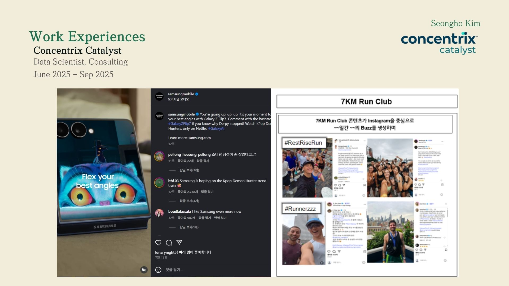
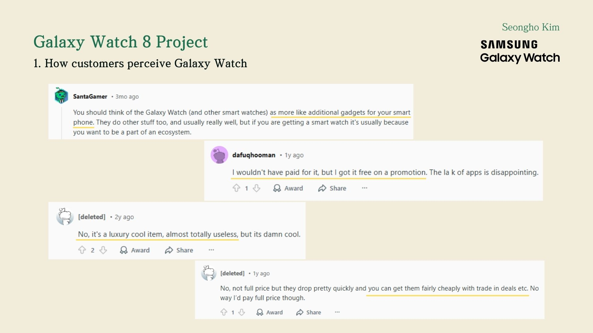
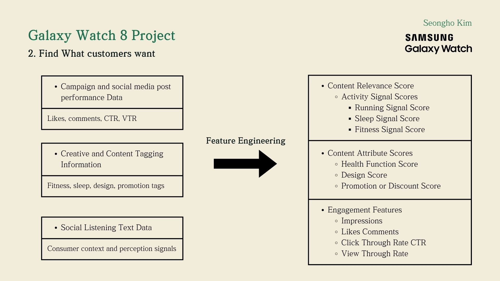
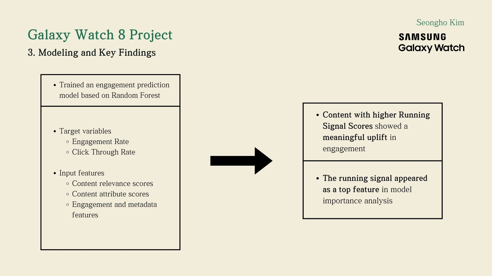
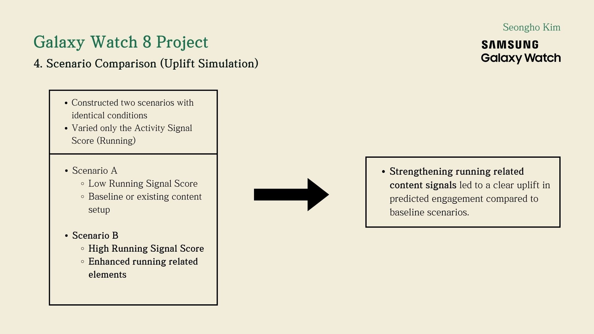
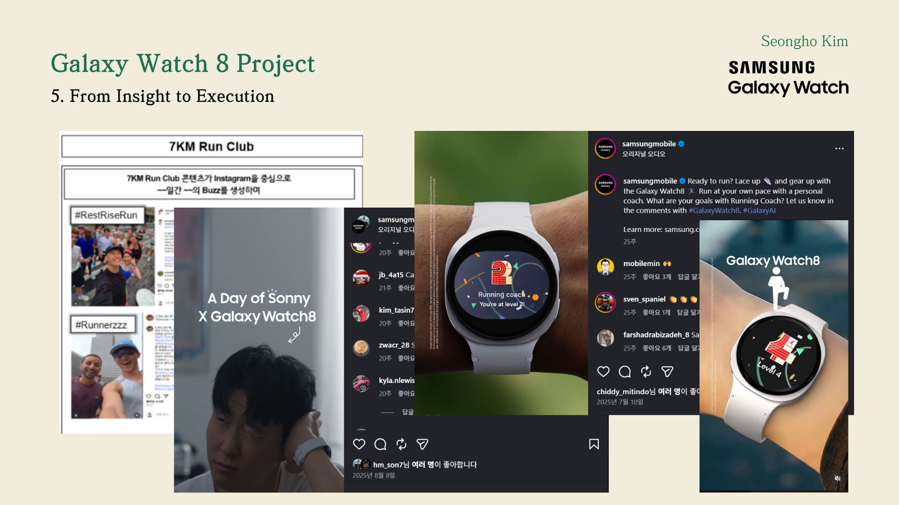

Overview
At Concentrix, I worked on a consulting project related to Samsung Galaxy Watch 8, using large scale
social listening data to understand user engagement and product perception. My role focused on applied
machine learning, behavioral signal analysis, and data driven consulting insights that could support
product positioning and user interaction strategy.
Key Responsibilities
-
Aggregated and analyzed large scale social listening data to identify product perception patterns
and user engagement drivers.
-
Built machine learning models to detect content and behavioral features associated with stronger
user response and higher engagement.
-
Performed feature engineering on campaign and content related variables to quantify user interaction
signals in a structured way.
-
Developed an LLM based pipeline to automate semantic extraction and structure large volumes of
text data for analysis.
Achievements
-
Delivered consulting insights grounded in machine learning and data analysis for Galaxy Watch 8.
-
Identified high impact behavioral and content signals that supported stronger product positioning
decisions.
-
Contributed to measurable performance improvement, including a 1.2 times engagement lift and
a 1.5 times projected uplift in strategy validation.
Machine Learning
Product Analytics
Social Listening
LLMs
Consulting
Feature Engineering
Portfolio





